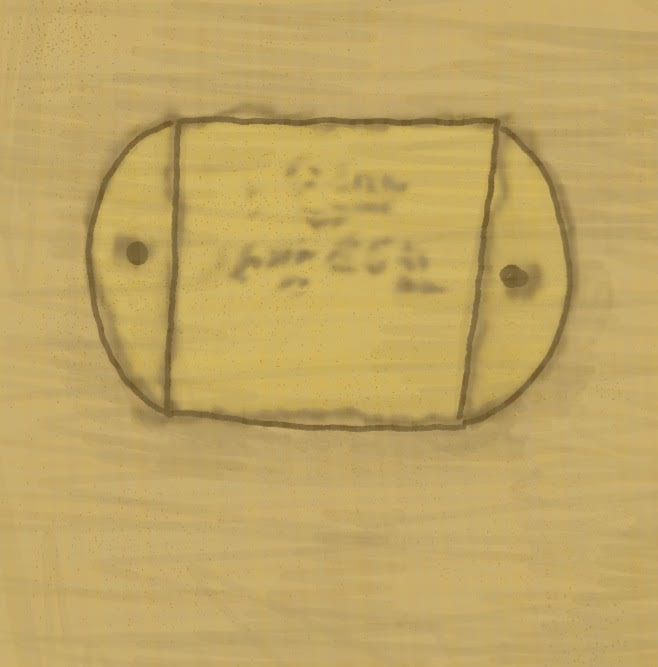

Mermaid - Sade
🎝
The darkness was overwhelming until Brooklyn saw a wall ahead that seemed blank except for a small square carved in the center. It had two
semicircles on each side with a circular dip inside.
Brooklyn raised her finger and traced the engravings; imagining she was the mystery individuals who carved it.
|  |
But what side should she take?